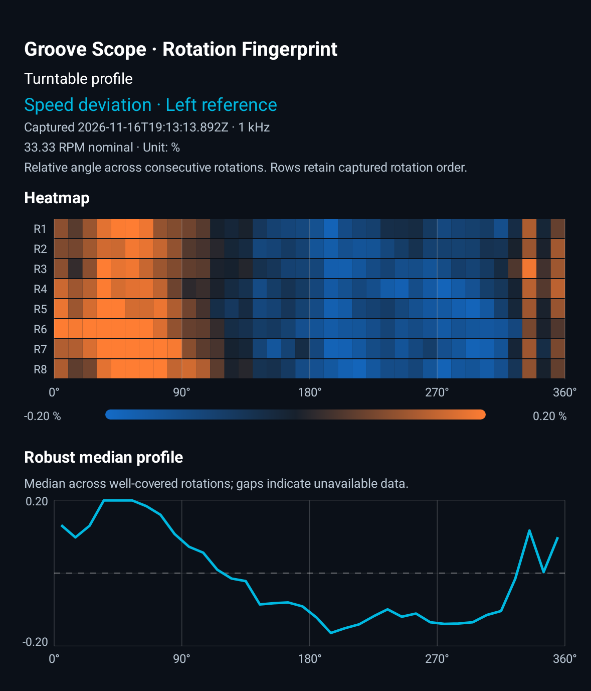
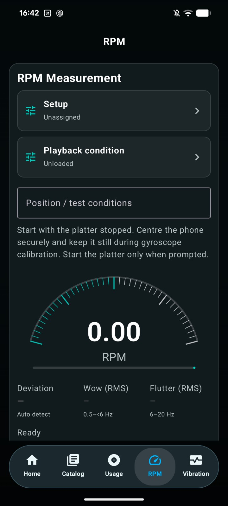
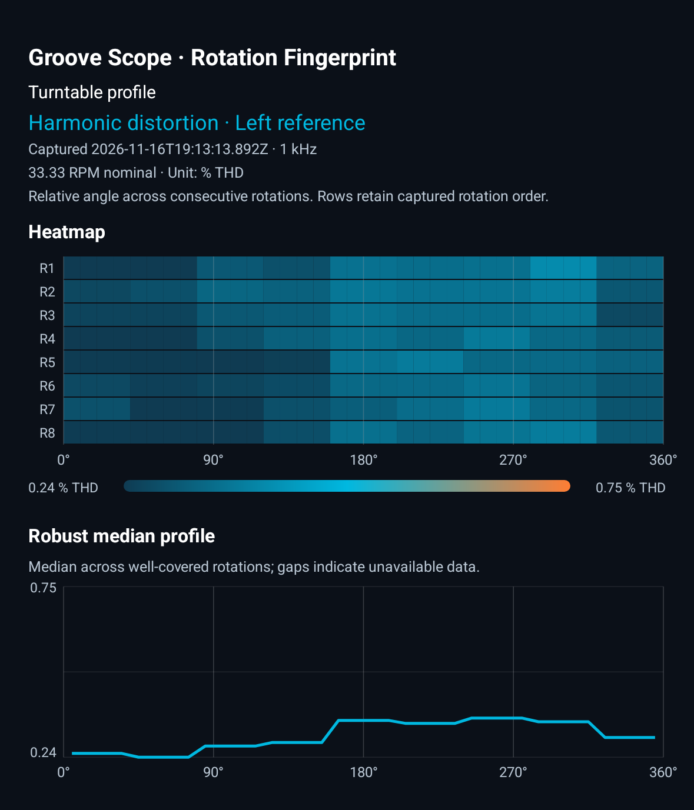
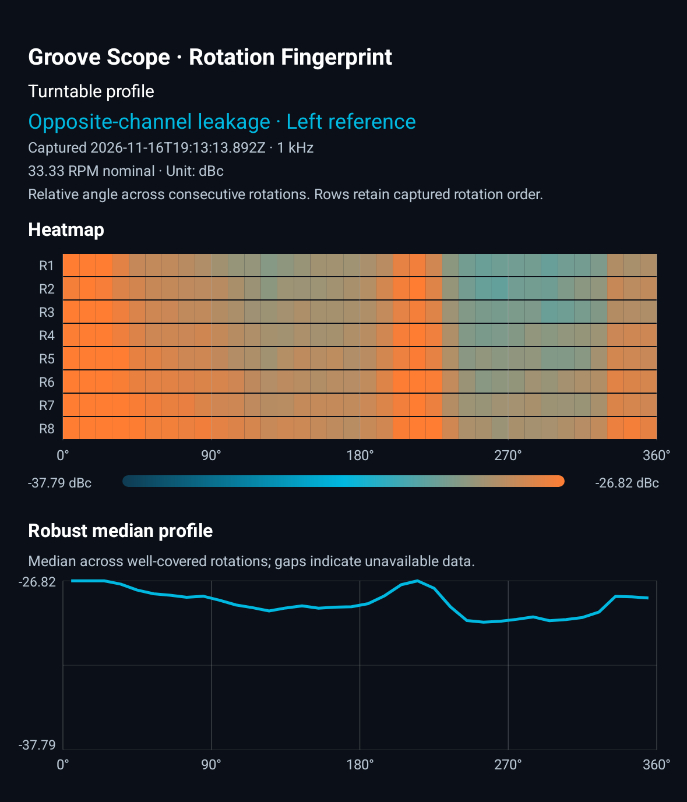
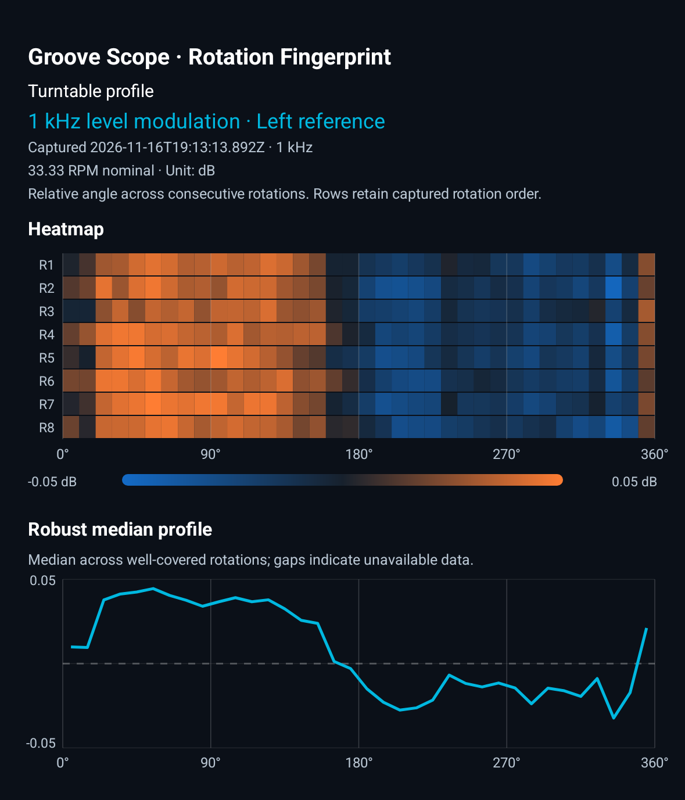

Speed deviation

Left channel selected

Groove Scope measurement · GS-2026-0020
la misura ha riportato un imbalance lieve che ho potuto rilevare grazie all'app
Values exported from the saved capture.
Rotation fingerprints
Each view pairs the angular heatmap with its robust median profile. Choose L or R on each card.

Left channel selected

Left channel selected

Left channel selected

Left channel selected
Channel labels identify the Left-only and Right-only reference tracks. Scales, angular alignment and quality notes are retained in each export.
| Average RPM | 33.30 RPM |
|---|---|
| Error vs nominal | -0.09% |
| Left-track RPM | 33.31 RPM |
| Right-track RPM | 33.30 RPM |
| Left wow / flutter RMS | 0.129% / 0.037% |
| Right wow / flutter RMS | 0.133% / 0.033% |
Raw, unweighted RMS estimates split at 4 Hz; not a DIN/IEC weighted-peak rating.
| Left → right | -28.0 dB |
|---|---|
| Right → left | -34.6 dB |
| Directional difference | 6.6 dB |
| Reference-level difference | 0.8 dB |
| Internal input boost | +11.0 dB |
More negative leakage means better separation. Keep interface gain unchanged between tracks.
| Comparison | Left → right leakage is higher |
|---|---|
| Suggested check | Trial: tilt right viewed from the front, then remeasure |
A 2 dB difference is a follow-up cue, not a cartridge tolerance. Confirm routing and track selection; make only small trial changes and repeat both captures.
| THD (harmonics 2–5) | 0.40% |
|---|---|
| 2nd harmonic | -49.2 dBc |
| 3rd harmonic | -56.4 dBc |
| 4th harmonic | -60.6 dBc |
| 5th harmonic | -63.3 dBc |
Harmonics are relative to the expected main-channel 1 kHz fundamental.
| THD (harmonics 2–5) | 0.75% |
|---|---|
| 2nd harmonic | -42.8 dBc |
| 3rd harmonic | -56.2 dBc |
| 4th harmonic | -60.0 dBc |
| 5th harmonic | -63.3 dBc |
Harmonics are relative to the expected main-channel 1 kHz fundamental.
The saved measurement, generated plots and supplied photograph are archived with this record. DSR reviewed this contribution before publication. Capture and exporter versions are recorded separately. No raw audio is included.
Results describe the complete playback chain. Quality and repeatability notes remain part of the source record.